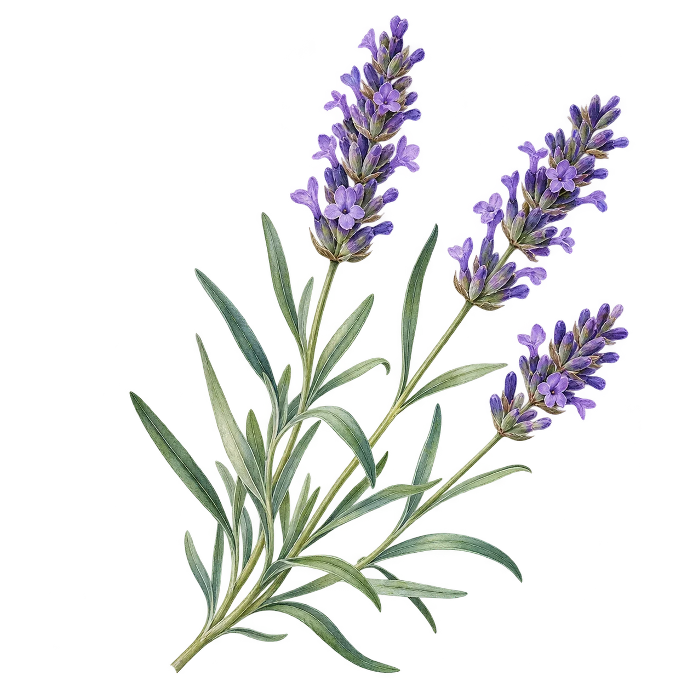

VOTRE POINT DE DÉPART
Un besoin. Une huile.
Les bons repères.
Retrouvez ensemble l’usage, la voie, la quantité et les précautions d’une préparation documentée.

/
Un carnet vivant, des repères transparents La méthode & les sources explorées ↗
Ce carnet de travail rassemble les informations recueillies pour Corinne. Les quantités concernent une préparation, un usage et une population précis ; elles ne valent pas pour tout flacon et ne constituent pas une prescription personnalisée. Les protocoles d’études, les étiquettes de fabricants et les mentions des cours gardent leur contexte. Une donnée manquante ne signifie pas une absence de risque.
Les favoris et vos mémos sont enregistrés dans ce navigateur, sur cet appareil. Les illustrations sont décoratives et ne permettent pas d’identifier une plante.